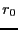

Particle Displacement. The most common trial move in
continuous-space MC is a particle displacement. First, a small
number  , representing a maximum displacement, is set. A
trial move consists of
, representing a maximum displacement, is set. A
trial move consists of
| (84) |
This move guarantees detailed balance, provided that the random
particle selection is uniform; for any given move, selection of all
possible particles is equally likely. This means that probability of
suggesting a move that displaces a particle, going from a state  to
a new state
to
a new state  , has the same probability of selecting the same
particle while in state
, has the same probability of selecting the same
particle while in state  and giving it a displacement that will
return the configuration to state
and giving it a displacement that will
return the configuration to state  . (Do you think such sequential
moves ever actually happen?)
. (Do you think such sequential
moves ever actually happen?)
For a system of simple particles, random displacements are the only necessary trial moves; thus, is always unity. For more complicated systems, there are zoos of trial moves all over the literature. We will consider some more complicated systems and trial moves later in the course; one that we consider next is rigid rotation.
The question at this point is, how does one choose an appropriate
value for  ? If
? If  is too small, the system will not
explore phase space given a reasonable amount of computational effort.
If it is too large, displacements will rarely result in new
configurations which will be accepted in a Metropolis MC scheme. So
it takes a bit of trial and error to find a good value for
is too small, the system will not
explore phase space given a reasonable amount of computational effort.
If it is too large, displacements will rarely result in new
configurations which will be accepted in a Metropolis MC scheme. So
it takes a bit of trial and error to find a good value for  ,
and the rule of thumb is to set
,
and the rule of thumb is to set  such that the average
probability of accepting a new configuration during a run is
about 30%. This is termed ``tuning
such that the average
probability of accepting a new configuration during a run is
about 30%. This is termed ``tuning  to achieve a 30%
acceptance ratio.'' We will go through the exercise of determining
such an appropriate value for
to achieve a 30%
acceptance ratio.'' We will go through the exercise of determining
such an appropriate value for  for a simple continuous-space
system; namely, 2D hard disks confined to a circle.
for a simple continuous-space
system; namely, 2D hard disks confined to a circle.
Rigid rotation. A second common type of trial move is used in systems of more structured molecules than just simple, single-center spheres. Consider a diatomic with a rigid bond length . Clearly, attempting to move one of the two members of the diatomic by a random displacement is likely to result in a new bond length with may be significantly different from . So, for a system of diatomics, a reasonable set of trial moves would include
With more than one kind of move, an attempt to generate a new state must be preceded by a random selection of the trial move. We can weight each kind of move and then use a random number to decide which move to attempt. For example, let's say that we choose that 80% of all trial moves be displacements, and the balance rotations (we will see later whether or not this is a good choice). Prior to an attempted move, we select a uniform random variate, , on the interval . If , which it will be 80% of the time, we execute a displacement of a randomly chosen molecule; otherwise, we execute a rotation of a randomly chosen molecule.
Details of the rigid body rotation implementation are presented in the text, in Sec. 3.3.2. The two techniques described are vector addition for linear molecules, and quaternions for nonlinear molecules. For the purposes of one of our simple 2D case-studies, we will consider rotation by a small angle, which is effectively equivalent to the vector addition method described by Frenkel and Smit.